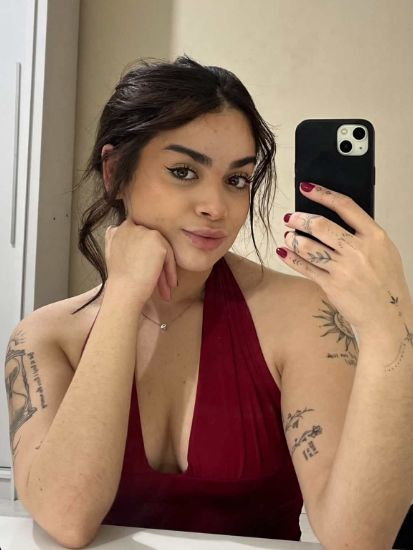

A graduação em Odontologia trouxe uma nova rotina, muitos conteúdos e os primeiros contatos com as diferentes possibilidades dentro da profissão.
Sobre mim.
Atualmente, estou no 4º período de Odontologia e construindo minha trajetória dentro da área. Entre os caminhos que mais despertam meu interesse estão a Cirurgia Bucomaxilofacial e a Odontopediatria.
